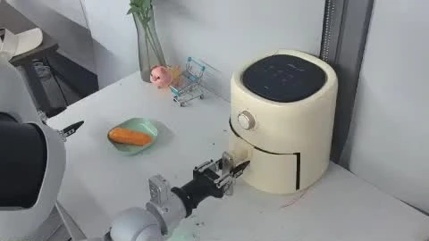
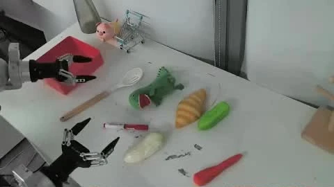
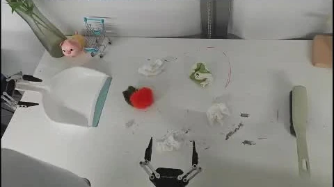
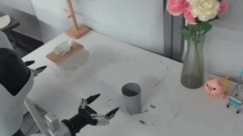
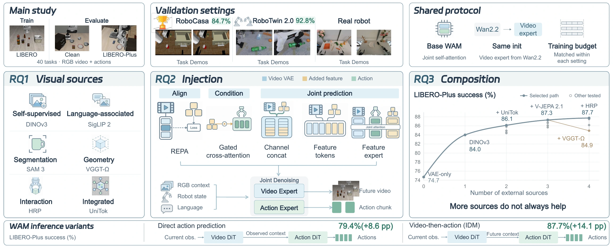
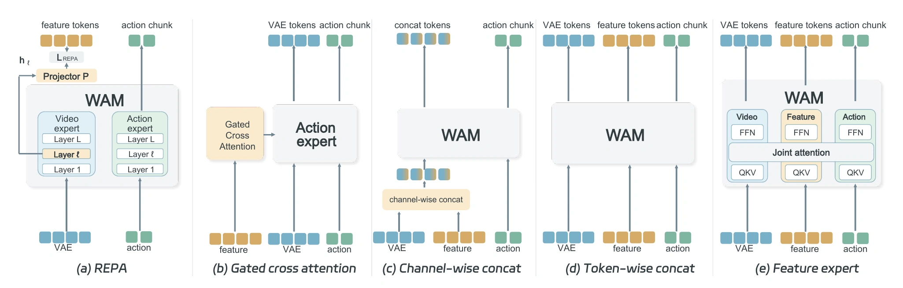
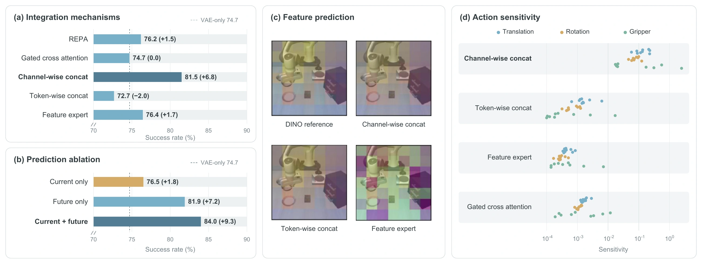
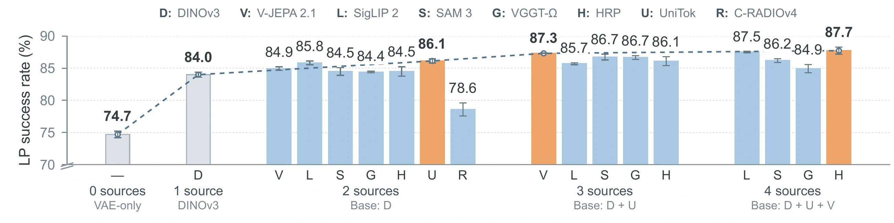

ROBOCASA GR1 TABLETOP
84.7%
+5.9 percentage points
VAE-only: 78.8%
24 tasks · 50 trials per task
VISUAL REPRESENTATIONS FOR ROBOT LEARNING
What to represent. How to integrate. When to combine.
arXiv preprint forthcoming

01 Air-fryer preparation ↗
02 Instructed pick-and-place ↗
03 Tool sweeping ↗
04 Cup pushing ↗THE STUDY
World action models inherit powerful video-generation priors. But which visual features help them act?
We study this question within a common WAM framework, comparing representation sources, feature integration mechanisms, and combinations of sources. The result is a practical Representation Recipe — R²-WAM — validated across WAM formulations, simulation benchmarks, and physical robot tasks.

View full figureTHREE QUESTIONS, THREE FINDINGS
Explore the evidence behind the recipe.
Success rates (%) and gains in percentage points (pp).
RQ1 · WHICH REPRESENTATIONS HELP?
Across the evaluated encoders, general-purpose representations achieve a higher average LP success rate than specialized representations: 82.2% versus 80.0%. A general-purpose encoder has the highest observed mean in each of the seven perturbation categories.
DINOv3 over the VAE-only baseline
84.0% vs. 74.7% overall success
Gain over VAE-only (pp) · channel-wise concatenation · means over three evaluation seeds
VAE-only baseline: 74.7%
Bars: gain over baseline · SR: success rateRQ2 · HOW SHOULD FEATURES BE INTEGRATED?
Channel-wise concatenation gives the highest average LP success across thirteen sources: 81.5%, or 5.1 percentage points above the next-best mechanism. The DINOv3 ablation supports future-feature prediction as a major contributor.

View full figure ↗
View full figure ↗RQ3 · IS ADDING MORE ALWAYS BETTER?
DINOv3 provides the main improvement over VAE-only: +9.3 percentage points. The best evaluated combination adds a further 3.7 points. The benefit of each additional source depends on the representations already present.
For example, adding SigLIP 2 changes success by +1.8 points with DINOv3, −0.4 with DINOv3 + UniTok, and +0.2 with DINOv3 + UniTok + V-JEPA 2.1.

View full figure ↗FROM FINDINGS TO A RECIPE
A compact combination of visual representations,
integrated through channel-wise concatenation.
The three-source recipe reaches 87.3% on LIBERO-Plus. Adding HRP reaches 87.7%; we retain three sources to limit auxiliary encoders and feature-prediction targets.
VALIDATION BEYOND THE MAIN STUDY
Improvements over corresponding VAE-only baselines
across simulation benchmarks and WAM formulations.
ROBOCASA GR1 TABLETOP
84.7%
+5.9 percentage points
VAE-only: 78.8%
24 tasks · 50 trials per task
ROBOTWIN 2.0
92.8%
+2.2 percentage points
VAE-only: 90.6%
50 tasks · clean and randomized settings
OTHER WAM FORMULATIONS
70.8 → 79.4%
73.6 → 87.7%
LIBERO-Plus success · VAE-only → + recipe
ON A PHYSICAL ROBOT
Four manipulation tasks on Galbot G1.
20 evaluation trials per task, per model.
Demonstrations from the paper’s supplementary material 01:34
| Task | Metric | VAE-only | R²-WAM |
|---|---|---|---|
| Air-fryer food preparation | Complete-task success | 50.0% | 60.0% |
| Instructed pick-and-place | Complete-task success | 70.0% | 80.0% |
| Tool sweeping | Mean debris collection rate | 48.3% | 66.7% |
| Cup pushing | Complete-task success | 65.0% | 75.0% |
Sweeping measures the proportion of six debris pieces collected per trial; the other tasks measure complete-task success.
REFERENCE THIS WORK
@misc{liu2026r2wam,
title = {What Visual Representations Do World Action Models Need?},
author = {Kai Liu and Jiangran Lyu and Tingyu Deng and Yixin Zheng
and Jingtian Wan and Cui Wenbo and Mi Yan and Yizhou Zhou
and Haoran Li and Dongbin Zhao and Zhizheng Zhang and He Wang},
year = {2026},
howpublished = {Project website},
url = {https://kailiu18.github.io/R-2WAM.github.io/}
}